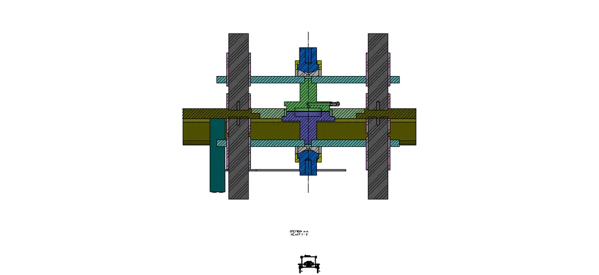
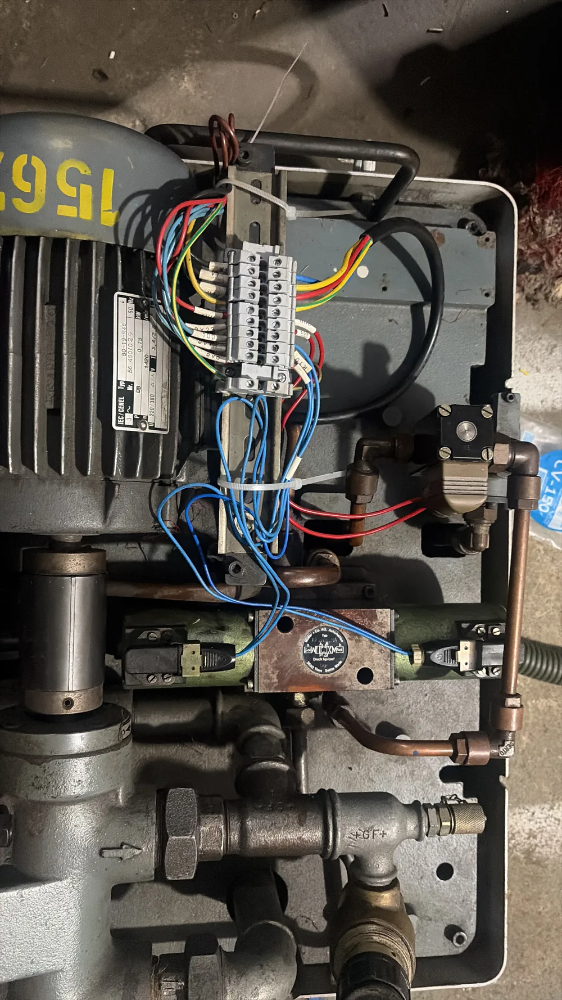

01 / INPUT
Start with the operation.
Component, process, target output, tolerance, inspection requirement and existing machine condition define the project before a mechanism is chosen.
REFERENCEApplication first
Explore VSK as an engineering system rather than a list of services. Every requirement can pass through machine design, fluid power, controls, electrification, manufacturing, trials and commissioning.

machines delivered across India
special-purpose variants
face-alignment reference
facing-machine project
Instead of separating departments, this concept makes the engineering sequence visible. Select a stage to see how a requirement moves from application study to a working machine.

Component, process, target output, tolerance, inspection requirement and existing machine condition define the project before a mechanism is chosen.

Mechanical layout, workholding, hydraulics, pneumatics, spindle interfaces and motion concept are developed as one architecture.

CNC, PLC, HMI, servo, VFD and panel electrification convert the machine sequence into controllable production behavior.

Fabrication, assembly, wiring, pneumatics, hydraulics and controls converge into the completed machine.

Cycle, repeatability, alignment and application-specific acceptance points are proven before the machine becomes production equipment.

Installation, trials, operator handover and field support complete the engineering loop.
Move through the machine list and the relevant VSK project image follows the pointer. The interaction is closer to an engineering register than a conventional card gallery.
Purpose-built servo SPM
SPM / SERVOFixture + inspection architecture
TEST / INSPECTCNC boring application
CNC / BORE0.02 mm project reference
PRECISIONDedicated drilling equipment
SPM / DRILLApplication-led CNC machine
CNC / TURNMachine second-life reference
RETROFITCustom process equipment
PROCESSThree projects show different sides of VSK: a purpose-built SPM, a retrofit, and inspection equipment.

The project archive contains complete-machine and close-up views, making it a strong example of application-led SPM construction.

Mechanical restoration and controls modernization extend useful machine life instead of replacing the entire asset.
The supplied archive includes machine and fixture views, showing how inspection requirements connect to physical machine architecture.
“Good service company”
“Special purpose machines effective price”
“Custom built machines, CNC retrofit solution services provider.”
Use the form to prepare a structured enquiry. Nothing is uploaded or sent automatically; you review it in your email app or WhatsApp first.